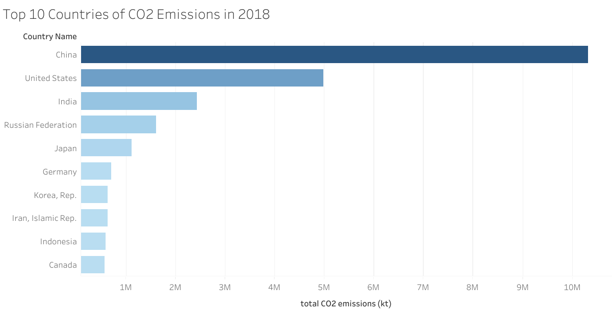
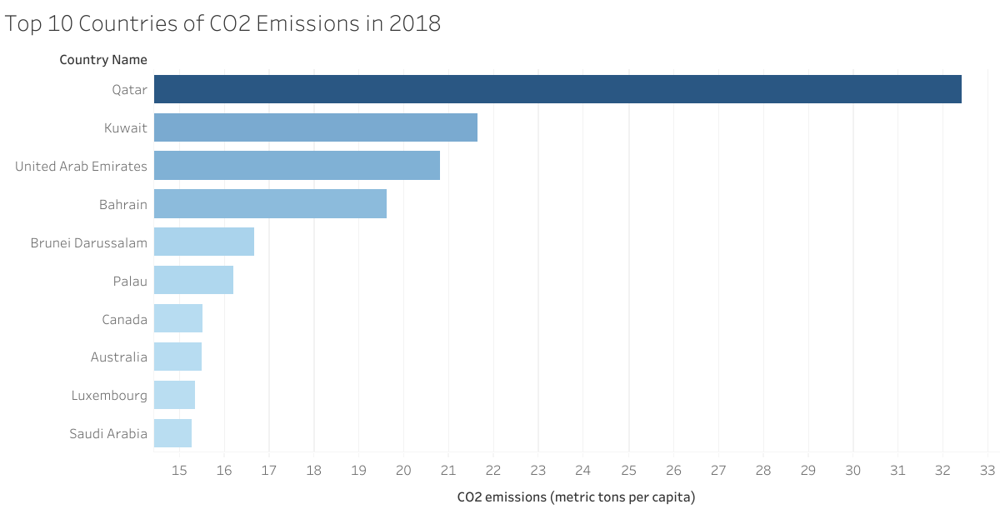

Proposition: China is the most responsible country for the world's CO2 emissions.
FOR the Proposition

Design Decisions and Rationale:
**Scoring scale: -2 is fully deceptive, 0 is neutral, and 2 is fully earnest.
- [Score: 2] A bar chart is the most appropriate mark for categorical data because it does not suggest any trend. Rather than a color scale or circular areas, rectangular areas make it easy to compare values.
- [Score: -1] The data attribute used is the total CO2 emissions per country. Naturally, a large, highly populated country will emit more greenhouse gases because they consume more resources. This data is not transformed to make the countries' CO2 emissions more comparable on the basis of population. However, it is a justifiable and simple attribute to graph, so it's scored a -1 instead of -2.
- [Score: 2] The bars are sorted to help establish country rankings and illustrate again that China contributes the most to CO2 pollution.
- [Score: 2] The axes are not truncated and start at 0, so all bar sizes are proportional to each other and can be compared logically.
AGAINST the Proposition
**Scoring scale: -2 is fully deceptive, 0 is neutral, and 2 is fully earnest.

Design Decisions and Rationale:
- [Score: 2] The mark is the same as the “for” design. A bar chart is the most appropriate mark for categorical data because it does not suggest any trend. Rather than a color scale or circular areas, rectangular areas make it easy to compare values.
- [Score: 1] The data attribute used is CO2 emissions in metric tons per capita. It is normalized by population, so a big country can be fairly compared to a small one. This changes the conclusion of the visualization a lot and completely changes the top 10 rankings.
- [Score: 2] The bars are sorted to help establish country rankings. This time, Qatar is the highest-ranked country in CO2 emissions.
- [Score: 2] The axes are not truncated and start at 0, so all bar sizes are proportional to each other and can be compared logically.
Final Reflection
I chose the same encodings for both visualizations, which produced visually similar plots, but I used different data transformations, and that led to drastically different plots and thus conflicting conclusions. I was surprised by the result of the “against” plot, because I assumed that although the top country might be different, it would still be one of the major countries (China, USA, India, etc.), but it turned out to be a small Middle Eastern country whose CO2 emissions per capita surpassed all other countries by more than twice. This showed the significance of choosing a different data attribute and why exploring and analyzing every column in a dataset is important.
I think not using deceptive techniques such as dual axes or disproportionate scaling is a given for all data visualization, as the resulting plot is not just misleading but incorrect and violates data visualization “rules”. Thus, I would define an analysis and visualization as ethical if the analyst explored the data thoroughly and chose what they believed to be the fairest data transformation that would not bias any particular subject or group. Of course, ineffective data visualization techniques such as truncation or using the inappropriate mark are still deceptive, but it can become more difficult to distinguish between truthful and misleading visualizations such as mine, which require more logical thinking about the data behind it and how it’s transformed to fit on the graph.